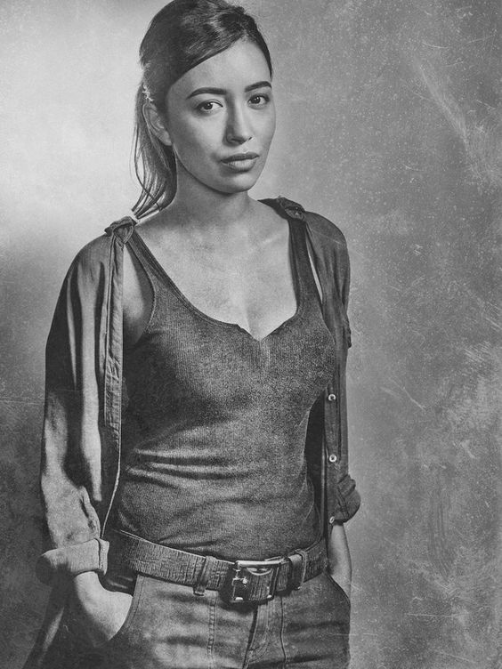

The Walking Dead: Una Comunidad de Fans Sobrevivientes
¿Qué te vas a encontrar?

Bienvenidos a nuestra página no oficial dedicada al universo de The Walking Dead. Somos una comunidad de fans apasionados que busca mantener viva la llama de esta increíble historia de supervivencia. Aquí encontrarás un espacio diseñado especialmente para compartir nuestra pasión por la serie, sus personajes y sus tramas inolvidables.
En nuestra página podrás explorar diversas secciones, comenzando con un carrusel de personajes donde revivirás a los protagonistas que marcaron cada temporada. Además, disfruta de videos con los momentos más impactantes y resúmenes de toda la serie. Estamos preparando más contenido emocionante, y también podrás participar en nuestra encuesta para compartir tus opiniones sobre el mundo apocalíptico de TWD.
Este es tu lugar para redescubrir The Walking Dead desde una perspectiva única y de la mano de otros sobrevivientes como tú. ¡Explora, descubre y unite a nuestra comunidad!
Descubre másPersonajes Principales
-
Rick Grimes: El líder del grupo que lucha por mantener la moral en un mundo sin reglas.
-
Daryl Dixon: Cazador y aliado clave del grupo, siempre leal.
-
Carol Peletier: De una mujer frágil a una feroz sobreviviente.
-
Michonne: Guerrera con katana, una fuerza imparable en el grupo.
-
Morgan Jones: Un hombre atormentado que pasa de ser pacifista a guerrero, mientras lucha por encontrar su paz interior.
-
Aaron: Un reclutador amable y diplomático que introduce al grupo a la comunidad de Alexandria.
-
Eugene Porter: Un científico con un oscuro secreto, cuyo intelecto es una herramienta clave para la supervivencia.
-
Padre Gabriel: Un sacerdote que encuentra redención y propósito al convertirse en un valioso miembro del grupo.
-
Sasha: Una francotiradora experta que lucha constantemente contra su dolor y traumas.
-
Tara: Sobreviviente leal y compasiva, que se une al grupo tras el ataque del Gobernador
-
Maggie: La hija de un granjero que se convierte en una líder intrépida tras la muerte de su familia
-
Glenn: Un ex-repartidor convertido en el héroe del grupo, conocido por su valentía y bondad.
-
Carl Grimes: El hijo de Rick, un joven que crece rápido en un mundo violento y lleno de pérdidas.
-
Abraham: Un ex-sargento militar duro y resistente, siempre dispuesto a sacrificarse por el bien del grupo.
-

Rosita Espinosa: Una soldado fuerte y decidida, con habilidades de supervivencia excepcionales.
Ponete al día!!
No te olvides de ponerte al día ya que es muy importante. Por eso te dejamos este video a modo de recordatorio, de todas las muertes que podemos ver en la serie de the walking dead.
Ademas, te dejamos a modo de recordatorio, un resumen de todas las temporadas de the walking dead. Este video nada más miralo si dejaste la serie por un tiempo, queres volver a retomarla, y para eso tenes que acordarte lo que había pasado.
Precuelas y Secuelas
A continuación vas a ver las portadas de las series secuelas o precuelas de la original que es the walking dead. Todas estas son del mismo universon de la serie, solo que pasan en distintos lugares, y algunas con distintos personajes. Lee la descripcion de cada una y adentrate en la historia espectacular de cada una de estas series. Quien sabe? en un futuro capaz que nos encuentran en una página de fans de una de estas series...
Ambientada antes de los eventos de The Walking Dead, esta serie sigue a un grupo de personas que intentan sobrevivir al brote inicial del apocalipsis zombi. Desde los primeros días de confusión y caos en Los Ángeles hasta las luchas por adaptarse a un mundo en ruinas, la serie explora cómo el apocalipsis cambia a las personas y cómo la humanidad, aunque en decadencia, aún encuentra razones para luchar. 'Fear the Walking Dead' revela una visión más amplia del colapso global y cómo diferentes comunidades intentan enfrentarse a los horrores de los caminantes.
Situada una década después del inicio del apocalipsis, esta serie se centra en la primera generación que crece completamente en el mundo dominado por los muertos vivientes. La historia sigue a un grupo de adolescentes que se embarcan en un peligroso viaje fuera de la seguridad de su comunidad, en busca de respuestas sobre su pasado y el futuro que les espera. World Beyond ahonda en las estructuras de poder emergentes, las comunidades que han logrado sobrevivir y cómo los jóvenes deben enfrentar tanto los muertos como las intrigas de los vivos para descubrir su verdadero propósito en este nuevo orden mundial.
Esta serie antológica ofrece historias independientes dentro del universo de The Walking Dead, cada una centrada en personajes nuevos o existentes. Desde diferentes rincones del apocalipsis, estas historias muestran la diversidad de experiencias que las personas atraviesan mientras luchan por sobrevivir. Algunas historias exploran los inicios del brote, otras el colapso de la civilización o los desafíos de reconstruir la sociedad. 'Tales of the Walking Dead' ofrece una perspectiva fresca sobre las múltiples formas en que el apocalipsis zombi afecta a diferentes individuos y comunidades, y cómo algunos encuentran la esperanza mientras otros sucumben al miedo y la desesperación.
Ubicada en una Nueva York postapocalíptica, la serie sigue a Maggie y Negan mientras se aventuran en una peligrosa misión en la ciudad, ahora invadida por los caminantes. Esta extraña pareja debe poner sus diferencias a un lado y trabajar juntos para sobrevivir en un entorno hostil, donde nuevas amenazas tanto humanas como no humanas acechan en cada esquina. 'Dead City' ofrece una visión más oscura y caótica del mundo devastado por los caminantes, mientras Maggie busca justicia y respuestas, y Negan lucha contra su propio pasado.
En esta serie, Daryl Dixon, uno de los personajes más queridos de la serie original, llega a Francia sin saber cómo ni por qué. Atrapado en un país extranjero y devastado por los caminantes, Daryl debe navegar entre facciones enfrentadas y culturas diferentes, mientras trata de regresar a casa. La serie explora tanto los desafíos emocionales de la soledad como las nuevas y peligrosas amenazas que surgen en Europa, mientras Daryl forma nuevas alianzas y descubre secretos que podrían cambiar el curso del apocalipsis.
Rick Grimes y Michonne, dos de los personajes más icónicos de The Walking Dead, se reencuentran en esta nueva serie para enfrentarse a un viaje lleno de peligros. Separados por años, Rick ha estado prisionero de una fuerza militar desconocida, mientras Michonne ha pasado años buscando rastros de su esposo desaparecido. La serie sigue su lucha para reunirse, mientras descubren nuevas amenazas y aliados inesperados en un mundo aún más roto que antes. 'The Ones Who Live' ofrece una mezcla de emociones intensas, acción y revelaciones impactantes, profundizando en el vínculo entre Rick y Michonne y su lucha por reconstruir una vida en medio del caos.
Participa en nuestra Encuesta
Queremos saber tu opinión sobre The Walking Dead y sus series relacionadas. Completa el formulario y comparte tus ideas.